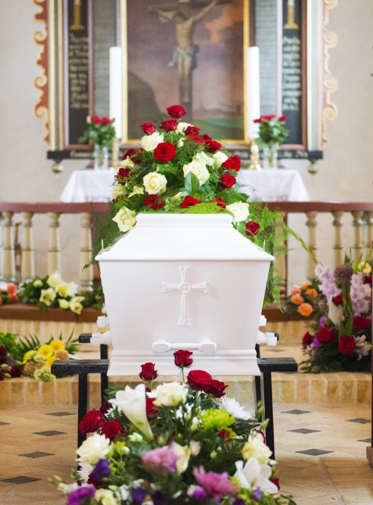

Ceremonia pogrzebowa — Gdynia, Gdańsk
Ostatnie pożegnanie bliskiej osoby powinno mieć wyjątkowy charakter.
Mając to na uwadze, oferujemy profesjonalną oprawę ceremonii pogrzebowej odbywającej się w Gdyni lub Gdańsku, co obejmuje zarówno wsparcie organizacyjne, jak i estetyczne przygotowanie miejsca pochówku. Pomożemy Państwu odpowiednio uhonorować bliską osobę podczas jej ostatniej drogi.
Co oferujemy w ramach oprawy ceremonii pogrzebowej?
Dobrze zaplanowana i dobrana oprawa ceremonii pogrzebowej odgrywa kluczową rolę w budowaniu atmosfery podczas pochówku. Nasz zakład pogrzebowy w Gdyni oferuje szereg usług, które pomogą zadbać o to, by pożegnanie zmarłego odbyło się w godnych warunkach. Wśród elementów, jakie zapewniamy, znajdują się:
Oprawa muzyczna pogrzebu
Ceremonia pogrzebowa nie musi być przeprowadzona w ciszy. Odpowiednio dobrana muzyka tworzy atmosferę, uzupełniając nastrój żałobnego konduktu. Oferujemy zarówno oprawę muzyczną na żywo, jak i z odtworzenia. Jeśli nie mają Państwo własnego pomysłu na konkretny utwór, mamy przygotowanych kilka propozycji na tę okoliczność.
Nagłośnienie
Podczas pogrzebu bliskie osoby często wygłaszają mowy pogrzebowe, podczas których podsumowują życie zmarłego, wspominają jego cechy charakteru czy dokonania. Aby wszyscy uczestnicy uroczystości mogli ich wysłuchać, zapewniamy profesjonalne nagłośnienie. Proponujemy pewny sprzęt, który nie zawiedzie w kluczowym momencie.
Fotografia pogrzebowa
Reportaż fotograficzny to pamiątka, która pomaga niektórym osobom w pożegnaniu bliskiej osoby i przeżywaniu żałoby. Pozwala także uwiecznić wydarzenie i zapewnić możliwość duchowego uczestnictwa w ceremonii tym, którzy nie mogli być na niej fizycznie obecni. Jeśli sobie Państwo tego zażyczą, zorganizujemy wzruszający reportaż fotograficzny.
Sztuczna trawa
Dekoracje stanowią nieodłączną formę okazania szacunku zmarłemu. Niestety nie każdy cmentarz dba o to, żeby teren wokół grobów był zadbany. Dzięki naszej interwencji taka sytuacja nie będzie miała miejsca. Nasze usługi pogrzebowe obejmują rozłożenie sztucznej trawy wokół grobu, która zwiększy estetykę ceremonii.
Baldachim
Pogoda jest czynnikiem, na który nie mamy wpływu. Deszcz czy śnieg może zaskoczyć zgromadzonych w każdej chwili. Ustawienie baldachimu to prosty sposób na to, aby uchronić uczestników uroczystości pogrzebowej przed zmoknięciem. Zapewnimy również krzesełka dla najbliższych i osób starszych.
Winda pogrzebowa
Podczas ceremonii pogrzebowych coraz częściej wykorzystuje się specjalne windy. Zastępują one tradycyjne opuszczenie trumny na linach. Dzięki zastosowaniu windy trumna jest opuszczana bez zbędnych przechyłów i szarpnięć, opadając ze stałą prędkością, powoli i dostojnie, co czyni tę chwilę pełną godności. Aksamitne kotary i inne dekoracje dodają elegancji, kiedy ciało zmarłego znika z oczu zebranych.
Zapraszamy do skontaktowania się z nami w celu ustalenia szczegółów oprawy ceremonii pogrzebowej w Gdyni, Gdańsku i okolicznych miejscowościach. Gwarantujemy, że korzystając z naszych usług, zapewnią Państwo bliskiej osobie godne ostatnie pożegnanie.
Jak długo trwa ceremonia pogrzebowa na cmentarzu?
Wiedza o tym, ile trwa ceremonia pogrzebowa na cmentarzu, pozwala na swobodne zaplanowanie późniejszej konsolacji, która potocznie nazywana jest po prostu stypą. W przypadku pogrzebu katolickiego uroczystość rozpoczyna się mszą żałobną, która trwa zazwyczaj około 40 minut, choć czas ten może się wydłużyć w zależności od długości kazania czy dodatkowych elementów liturgii. Po mszy następuje procesja na cmentarz, gdzie odbywa się ostatnie pożegnanie przy grobie. Ta część trwa zazwyczaj od 10 do 20 minut.
W przypadku obrządku świeckiego, który nie obejmuje mszy, cała ceremonia pogrzebowa z urną lub trumną na cmentarzu trwa zazwyczaj od 20 do 40 minut. Podczas niej bliscy zmarłego zwykle wygłaszają przemówienia, odtwarzają jego ulubioną muzykę, jak również prezentują zdjęcia.
Czas trwania ceremonii pogrzebowej na cmentarzu jest zależny od wielu czynników, takich jak rodzaj obrządku oraz realizacji dodatkowych życzeń rodziny zmarłego. Zazwyczaj uroczystości te trwają od około 30 minut do 1,5 godziny. Najważniejsze jest jednak, aby pożegnać osobę, która odeszła w sposób godny, w pełnym skupieniu, bez pośpiechu.